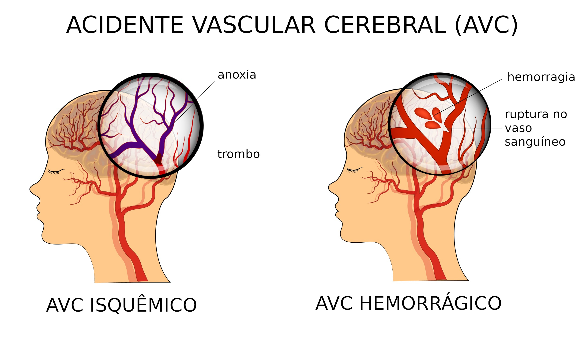

Uma nova pesquisa descobriu um sinal constantemente presente em adultos jovens que sofrem maior risco de enfrentarem um AVC, acidente vascular cerebral.
Primeiramente, a equipe comparou os dados de mais de 2.600 pessoas que tiveram derrames com mais de 7.800 pessoas que não tiveram.
Este tipo de enxaqueca é caracterizado por sintomas neurológicos específicos que ocorrem antes da dor de cabeça, conhecidos como aura.
Doença que atinge grande parcela da população idosa tem aumentado também entre o público mais jovem; entre os motivos, destacam-se exposição precoce a fatores de risco como sedentarismo, pressão arterial elevada, diabetes, colesterol alto e obesidade, além do uso de drogas ilícitas